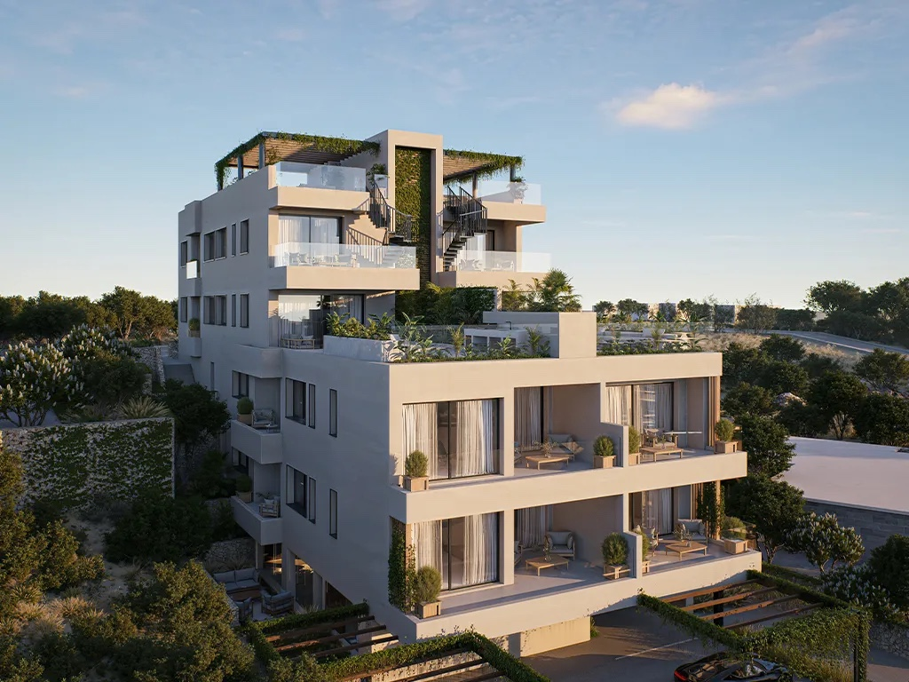
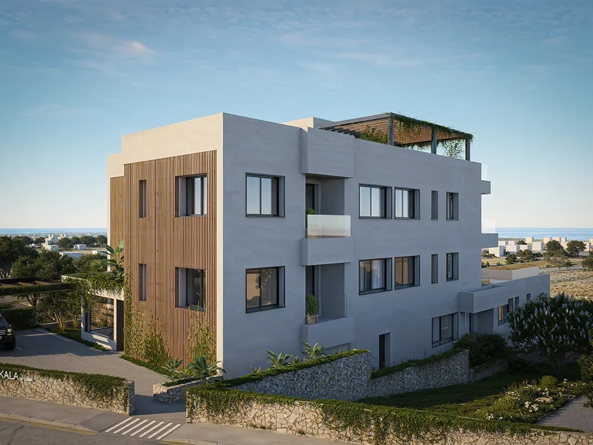
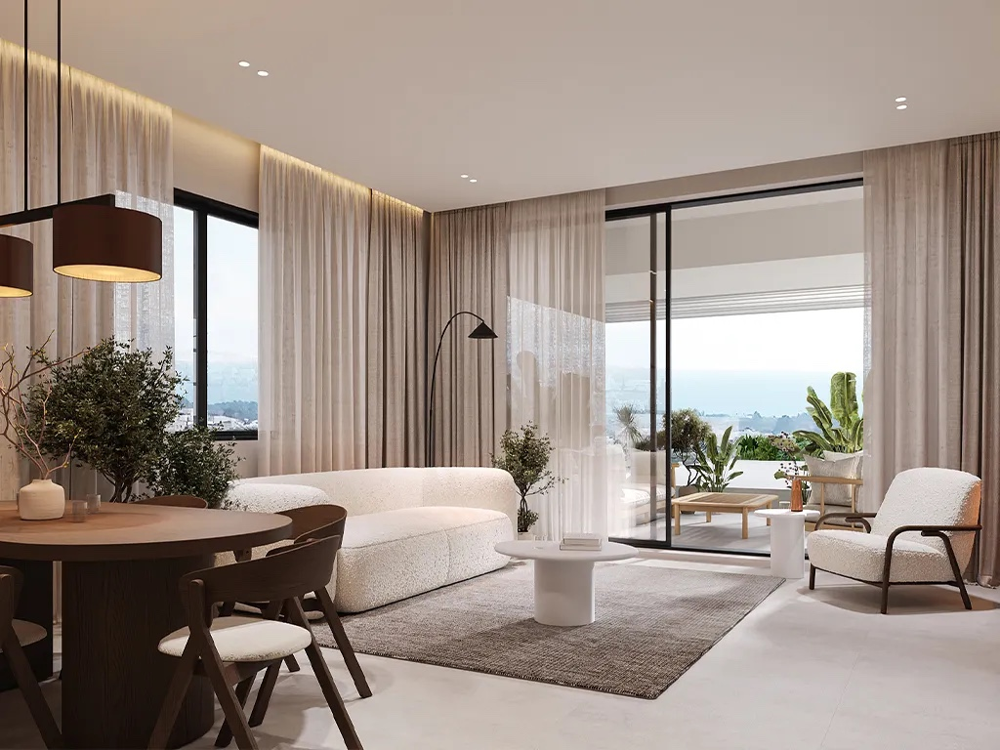
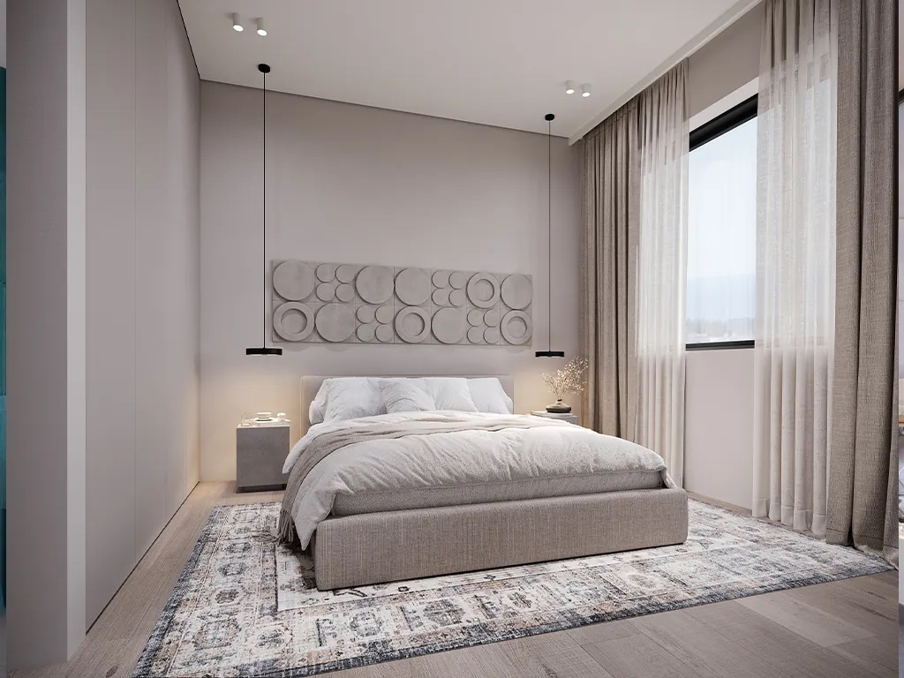
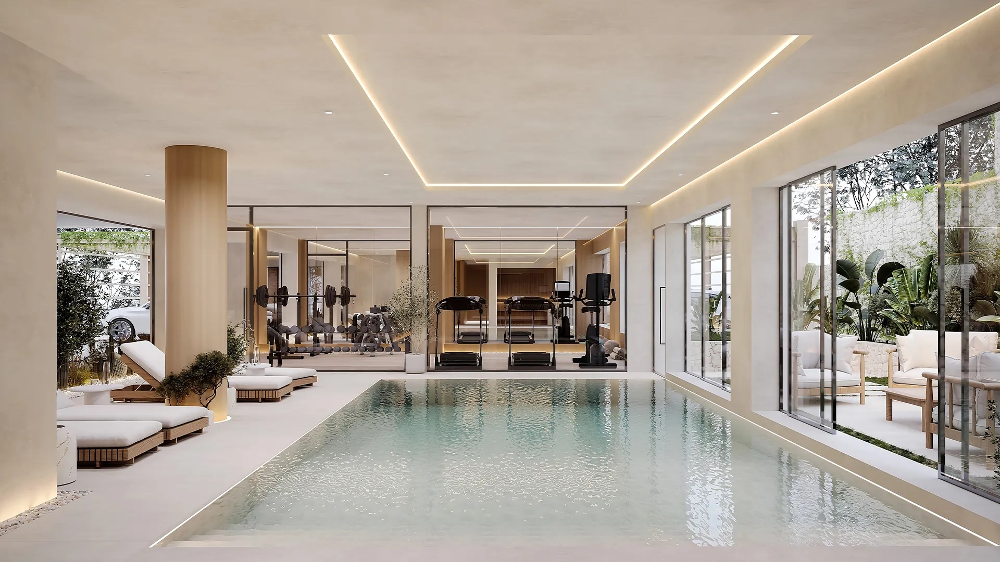

Geroskipou, Paphos

A stepped development of 12 one- and two-bedroom apartments, following the natural slope. The official project page lists an indoor heated pool, gym and sauna.
Selected original views from the developer’s project gallery.




Off plan · exact completion date not stated on checked page. Source checked 6 October 2026; availability and dates require developer confirmation.
This example is not accepting enquiries. A published presentation includes the contact details and enquiry links you approve.